The decisions of the 2026-09 component pass (branch
component-polish) that had more than one good answer.
Every option was built for real and drawn on the component sheet
(swaypplet --preview components.<page>,
dev/render.sh at 1440×900, scale 1, over the alcohol-ink
wallpaper) in both modes. The recommendation is what the branch
ships; the other option is one CSS class away, named under it, and
the sheet draws it with
SWAYPPLET_PREVIEW_ALT=<name>.
Harness limits: scale 1 where the laptop runs at 2, the nested sway's
blur stands in for the live session's liquid glass, and a static
sheet shows a pressed control's end state, never its motion. Judge
shape, contrast and consistency here; judge the press and the
material on the live session.
What a disabled control looks like every control
Does a control that cannot be used keep its box and grey its label,
or fade whole? And does a disabled switch still say which way it is?
Keep the box recommended
An action greys its label on a box that stays; a value stays
a value. The box is --fill-disabled, the ink at
the hairline's share and not a currentColor mix, so it does not
fade with the label. A primary or destructive action loses its
colour: it cannot be taken. A control that is on (a
checked toggle, chip or tile) keeps its accent at half strength,
and a switch, check or slider fades whole, because its value is
its shape. What macOS and iOS do.
Trade-off: two mechanisms (a greyed label, a faded whole)
for one word, and a new token to explain.
Buttons, dark: the disabled column keeps its box
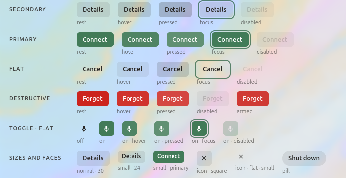
Buttons, light
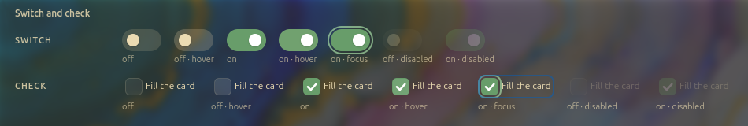
Switch and check, dark: on · disabled still says on
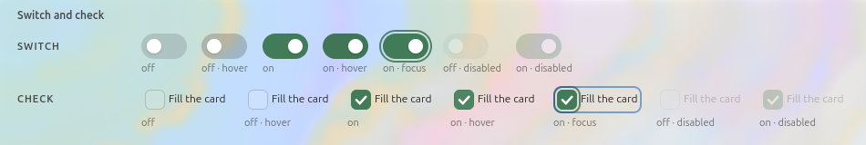
Switch and check, lightTiles, dark
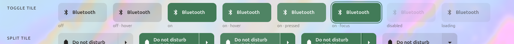
Tiles, light
data/css/components/button.css, chip.css, tile.css, slider.css,
field.css: the :disabled rules; src/tokens/emit.rs
--fill-disabled. Design system §3.2, §3.3.
Fade whole
Every disabled control keeps its colours at 50 % opacity.
One mechanism for every control, libadwaita's. A disabled primary
button stays green, a disabled destructive one stays red.
Trade-off: a dim green "Connect" reads as a live button in
a dark corner, not as one that cannot be pressed: the colour
still says "the primary action", which it is not. On a bright
wallpaper the 50 % box of a secondary button vanishes into the
glass the way the old 4 % fill did.
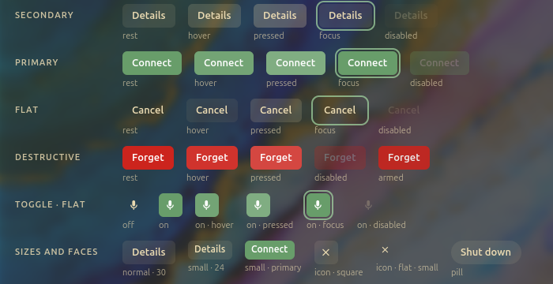
Buttons, dark
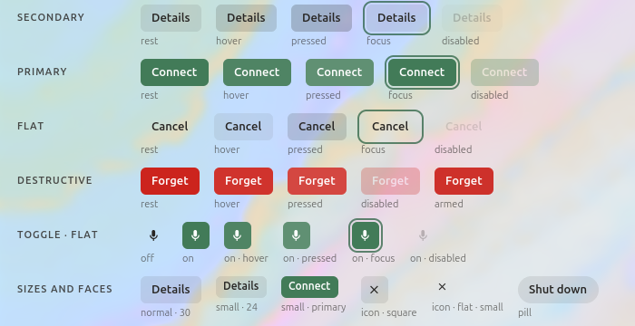
Buttons, lightSwitch and check, dark: the same as Keep the box hereSwitch and check, light
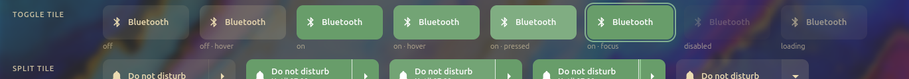
Tiles, dark
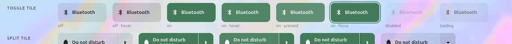
Tiles, light
class alt-disabled-fade on an ancestor (button.css, chip.css,
tile.css); SWAYPPLET_PREVIEW_ALT=disabled-fade
Grey label only (as shipped before this pass)
The label goes to --fg-disabled and nothing else is said.
The fill, a currentColor mix, fades with it to 4 % and the box is
gone; a disabled switch drops its accent.
Trade-off: a disabled button is a floating grey word, and
"on · disabled" and "off · disabled" are the same switch.
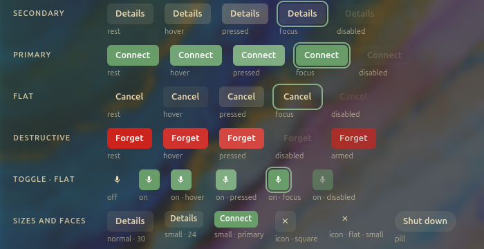
Buttons, dark
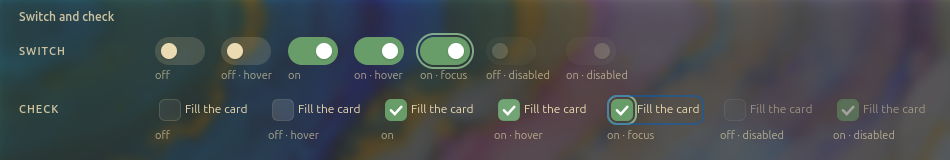
Switch and check, dark: both disabled switches read off
git show d60c7e1:data/css/components/button.css
How a press feels button, chip, tile
Is a pressed control the state overlay alone, or the overlay and a
3 % shrink?
Overlay recommended
One state model for every control. Hover lays 7 % of the
control's own ink over it, a press 16 %, in either mode and on
any fill (design system §3.3). Nothing moves, so nothing inside a
grid or a list is clipped, and a press on a row or a menu item
looks the same as one on a button. What GNOME, Windows and
Material do.
Trade-off: on the accent fill the press goes lighter,
toward the ink, where a physical button would go darker; the
difference between hover and press is a tone, not a movement.
The control also sinks: scale(0.97) over --motion-state.
iOS's press, where the thing under the finger gives. On a static
sheet it is a slightly smaller button; on screen it is the
motion that sells it.
Trade-off: a transform on a tile in the Helm's grid moves
its edge against its neighbours on every click, and a row or a
menu item would need the same or the system has two presses.
Needs a pointer on the live session to judge.
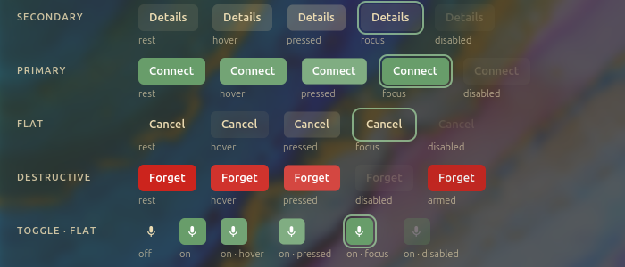
Dark: the pressed column, 3 % smaller
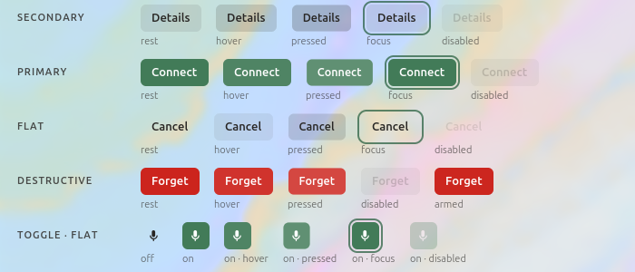
LightTiles, light: on · pressed shrinks
class alt-press-shrink on an ancestor (button.css, chip.css,
tile.css); SWAYPPLET_PREVIEW_ALT=press-shrink
Decided without a zoo one sensible answer
The switch lights under the pointer, as every other control
does: it was the one control with no hover state.
The chip presses: it had a hover but no pressed state, no
transition (only its rich variant had one) and no focus ring of
its own.
The dropdown reads as a field: regular weight (GTK's own
button weight made it bold beside a regular entry) and the entry's
focus ring, which hugs the field; a button's stands off.
A glyph on a square button is a step up (15 px, not 13): at
body size a 30 px square was mostly air. A small icon button is now
square (24 × 24).
Pressed goes toward the ink in both modes (lighter on dark,
darker on light): the currentColor overlay, which GNOME and
Material share; macOS's darker press would need a second model for
light mode.
No hover on a text entry: neither macOS nor GNOME has one,
and the caret is the affordance.
Focus rings stay outset (2 px, offset 2) on controls and
inset on rows and section headers, where an outset ring would
collide with the row above.